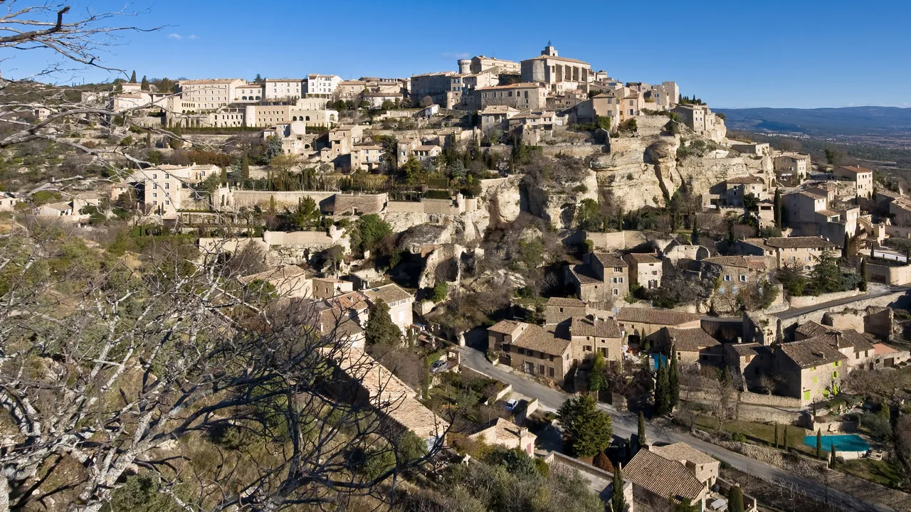
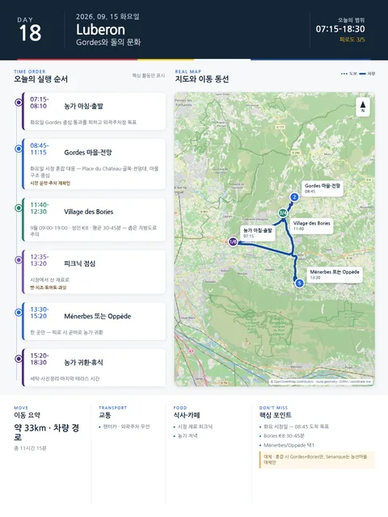

Day 18 · 9/15 화 · Luberon

오늘의 주요 장소


- 핵심 실행
- Gordes 시장·Bories·선택마을
- 권장 출발
- 08:15 출발
- 완충
- 시장주차 30분
- 예약
- 이 날짜로 잡힌 예약 없음 · 현황
시간표
| 시간 | 일정 | 실행 포인트 |
|---|---|---|
| 07:15–08:00 | 농가 아침 | 시장일이므로 일찍 출발 |
| 08:10 | 농가 출발 | 화요일 Gordes 중심 통과를 피하고 외곽주차장 목표 |
| 08:45–10:15 | Gordes 마을·화요일 혼잡 대응 | 시장은 운영·혼잡 재확인. 마을 구조와 전망이 핵심 |
| 10:15–11:15 | Gordes 마을·전망 | Place du Château, 골목, 전망대. 내부 전시보다 마을 구조 중심 |
| 11:15–11:40 | 차량 이동 | Village des Bories 방향. 좁은 지방도로 주의 |
| 11:40–12:30 | Village des Bories | 9월 매일 09:00–19:00, 마지막 입장 30분 전, 성인 €8 (2026-08-14 확인) |
| 12:35–13:20 | 피크닉 점심 | 시장에서 산 빵·치즈·토마토·과일 |
| 13:30–15:20 | Ménerbes 또는 Oppède 선택 | 한 곳만. 피로 시 곧바로 농가 귀환 |
| 15:20–16:15 | 농가 귀환 | Sénanque는 능선마을을 빼는 대체안 |
| 16:15–18:30 | 농가 휴식 | 세탁·사진정리·마지막 테라스 시간 |
| 19:30 | 저녁 | 농가식 또는 Gordes권 레스토랑은 귀로 동선상 미리 예약할 때만 |
피로도
3/5
이 날의 장소
일자별 시간표와 본문 표기에서 찾은 것이다. 하루의 전부가 아니라 장소 카드가 있는 것만 담는다.
이 날의 메모
Gordes, Bories와 선택 능선마을
- 오늘의 결론: 핵심은 Gordes·Bories이며, Ménerbes/Oppède·Sénanque 가운데 하나만 더한다.
실행 시간표
오늘 꼭 해볼 것
- Gordes는 성 내부보다 마을 전체가 보이는 외부 전망점을 먼저 보기
- 시장에서 과일·치즈·올리브 외에 작은 도자·직물도 살펴보기
- Bories에서는 “예쁜 오두막”보다 농업·목축 생활에 어떤 공간이 필요했는지 생각하기
- Sénanque는 라벤더꽃 기대보다 12세기 수도원과 계곡의 적막을 경험하기
삭제 및 단축 순서 (늦었거나 피곤할 때)
- Bories 내부
- Gordes 마을은 유지
대안 대책 (우천·휴관·교통 장애)
- 중심 주차는 07:00–08:30 사이 도착이 유리
- 주차요금: 30분 무료 티켓 필요, 4시간까지 €8, 4–11시간 €10 공식 확인
- 화요일 오전에는 마을 관통 운전을 강하게 피한다
- 주차장 이름보다 외곽 진입 후 도보 5–10분을 우선한다
상세 실행 확인
- 최고 리스크
- 시장혼잡·주차
- 우선 삭제
- Ménerbes/Oppède
- 대체안
- Gordes+Bories만
- 식사·휴식
- Gordes 피크닉
- 잠금 필요
- 시장·주차
Google 실행지도
Gordes 시장과 Village des Bories
지도 펼치기
지도는 펼칠 때만 불러옵니다.
Daily Action Map

실제 좌표와 OpenStreetMap을 사용한 실행용 요약입니다. 도로·대중교통 상황은 출발 직전에 다시 확인하세요.